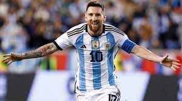
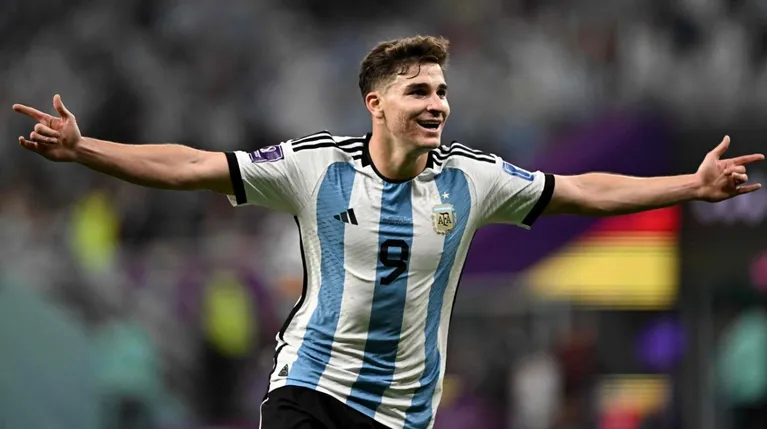
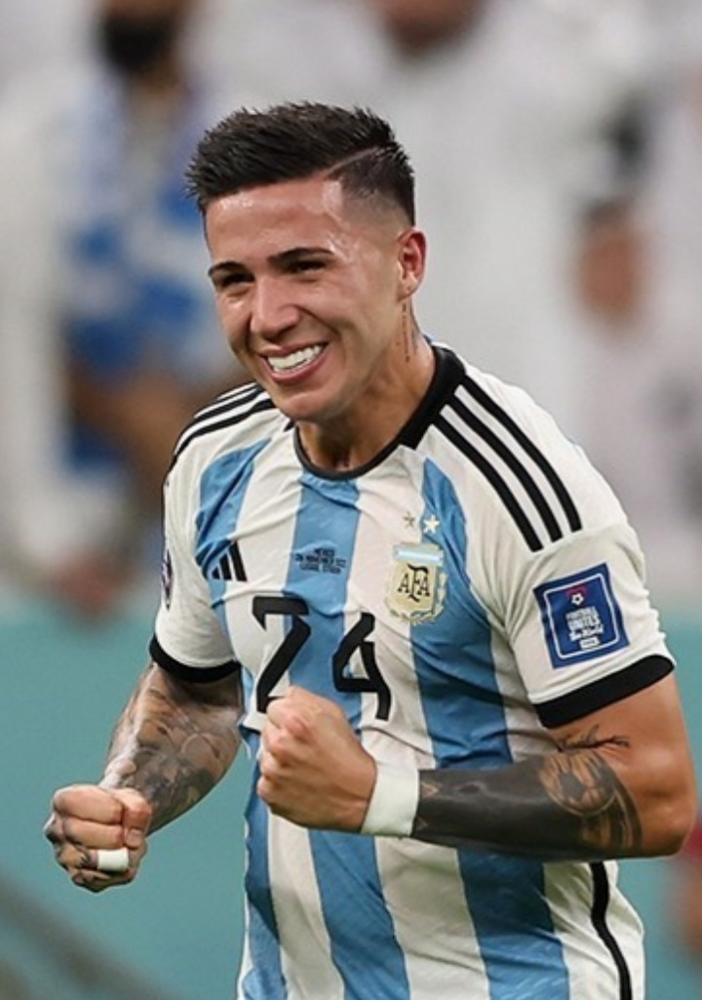
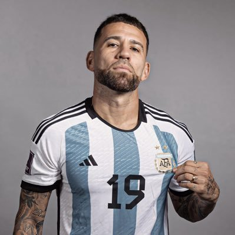

Aqui Hablaremos un poco sobre los jugadores que más me gustan.
Messi
Nacio el 24 de junio de 1987 en Rosario y se unio a la seleccion en 2005, su primer mundial fue en 2006. Lo que me gusta de el es su manera de jugar, como ayuda al equipo y su manejo con la pelota.

Julian Alvarez
Nacio el 31 de enero de 2000, es actual jugador del Marchester City, se unio ah la seleccion el 24 de mayo de 2021 y su primer mundial fue en 2022. Lo que mas me gusta de el es su rapidez ah la hora de convertir y sus goles.

Enzo Fernandez
Nacio el 17 de enero de 2001, actualmente juega en el Benfica, el 3 de noviembre de 2021 fue convocado por la seleccion Argentina y tuvo un buen paso sobre River Plate. Lo que mas me gusta de el es la distribucion de la pelota y sus pases en cortada.

Nicolas Otamendi
Nacio el 12 de febrero de 1988, su actual equipo es el Benfica, debuto en la seleccion Argentina el 20 de mayo de 2009. Lo que me gusta de el es su defensa y lo rustico a la hora de marcar.

Nahuel Molina
Nacio el 6 de abril de 1998, juega actualmente en el Atletico de Madrid, fue convocado para jugar con la seleccion Argentina el 3 de junio de 2021. Lo que me gusta de el es su velocidad a la hora de pasar y sus centros al area.